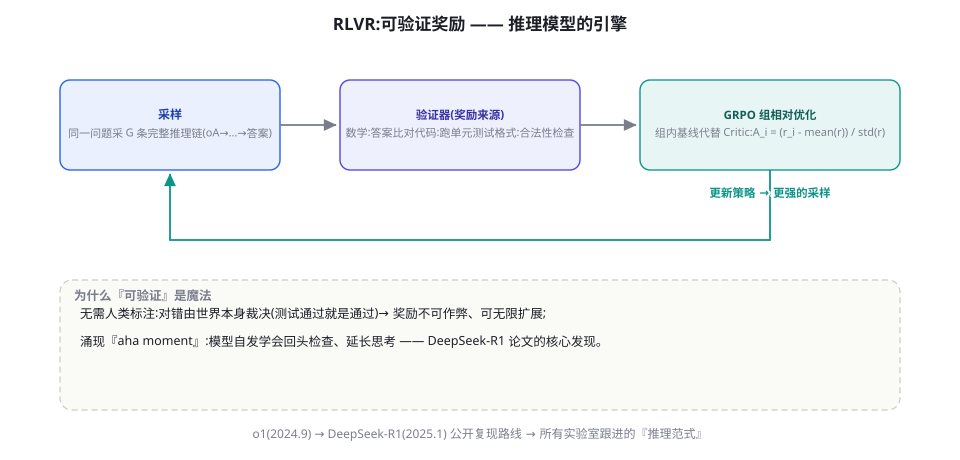

RLVR：可验证奖励的强化学习与推理范式
RLVR 是 2024-2025 年最重要的训练范式跃迁：当奖励直接来自「测试通过/答案正确/代码能跑」，模型第一次在训练中拥有不可作弊的导师。本章讲透 RLVR 的原理、GRPO 算法、DeepSeek-R1 的复现要点，以及 test-time scaling 的经济学。
范式跃迁：从「学人类判断」到「向世界求证」
RLVR（Reinforcement Learning with Verifiable Rewards）与前两章的本质区别在奖励的仲裁者：RLHF 的仲裁者是「人类/裁判模型」（主观、可被迎合、有偏差），RLVR 的仲裁者是「世界本身」——数学答案对不对可以比对、代码能不能跑可以执行、格式合不合规可以校验。仲裁者的性质决定了一切：不可作弊（世界不接受奉承）、无偏（不会偏爱长回答）、无限供给（验证器跑多少次都不累）、但域受限（只覆盖可验证任务）。这个跃迁的行业意义：o1（2024-09 OpenAI）首次展示「推理能力可以靠 RL 规模化提升」，DeepSeek-R1（2025-01，arXiv:2501.12948）用公开论文复现了整条路线并开源——推理模型从此从「实验室传说」变成「工业配方」。

GRPO：去掉 Critic 的聪明一招
RLVR 常配的算法是 GRPO（Group Relative Policy Optimization，DeepSeek 在 DeepSeekMath 中提出，arXiv:2402.03300）。它对 PPO 的改造只有一处却极妙：用「组内相对比较」替代 Critic——对同一问题采样 G 个回答，每个回答的优势 = （它的奖励 − 组内均值）/ 组内标准差。这样做的三重收益：省掉 Critic 模型（PPO 四模型变三模型，显存与工程减负）；基线自适应——简单问题（组内全对）的相对优势自动为零（没有可学的梯度，不浪费算力），难题（组内好坏分明）信号强烈——天然的「难度自适应课程」；与 RLVR 的验证器天然契合——验证器给出的是 0/1 式的结果奖励，组内统计正好把它转化为平滑的优势信号。GRPO 的直觉一句话：「同一道题，做对的同学比做错的同学多学一点」——不需要知道「标准答案应该让模型感觉多好」，只需要知道「谁比谁强」。
from trl import GRPOTrainer, GRPOConfig
from transformers import AutoTokenizer
def math_reward(completions, **kwargs):
"""验证器: 奖励来自世界,不来自裁判"""
rewards = []
for comp in completions:
answer = extract_final_answer(comp) # 抽取 \\boxed{} 内答案
correct = check_math(answer, GOLD[comp.prompt_id])
rewards.append(1.0 if correct else 0.0)
# 可选: +0.1 * format_score(comp) # 格式的细粒度塑形
return rewards
config = GRPOConfig(
num_generations=8, # G: 每题采 8 条
learning_rate=1e-6,
beta=0.04, # KL 缰绳(可调小甚至为0)
max_completion_length=1024)
trainer = GRPOTrainer(
model=model,
reward_funcs=[math_reward], # 可多个验证器加权
args=config,
train_dataset=math_problems, # 只需问题(不需要答案给模型)
processing_class=tokenizer)
trainer.train()注意数据形态的清爽：训练集只需要「问题 + 金标准答案」（答案给验证器，不给模型）——对比 SFT 需要完整示范、RLHF 需要偏好对，RLVR 的数据成本是「题目本身」——这就是它数据效率的来源：数学题、代码题、可校验的任务，天下取之不尽。
DeepSeek-R1 的复现要点：一篇论文的三段启示
R1 论文（2025-01）的最大贡献是把推理模型的训练路线完整公开，三个阶段的启示值得逐条提炼：阶段一：R1-Zero（纯 RL，跳过 SFT）——直接在 base 模型上跑 GRPO，发现「推理行为自发涌现」：模型学会了延长思考、自我验证、"aha" 式回头检查。启示：推理行为不需要人类示范教，奖励信号足够就能长出来——这推翻了「必须先 SFT 思维链示范」的假设。代价：R1-Zero 的可读性差（中英混杂、格式混乱）。阶段二：多阶段精修——少量冷启动 SFT（清理格式）→ 推理 RL → 拒绝采样 + 全场景 SFT（把推理能力泛化到写作等非推理任务）→ 再一轮全场景 RL。启示：「RL 打尖锋 + SFT 做泛化」的组合拳——RL 攻坚核心能力，SFT 把能力「翻译」到全场景。阶段三：蒸馏——R1 的 800K 轨迹蒸馏给小模型，7B 小模型的数学成绩反超原版 32B（第 48 章）。给你的行动启示：这的三段就是「推理模型创业/研究」的标准剧本——Zero 实验验证奖励设计 → 多阶段正式训练 → 蒸馏铺产品线。
R1-Zero 训练中期出现了著名的「aha moment」——模型在回答中途突然回头修正自己的推理（"wait, wait, wait. That's here..."）。它的机制拆解：训练压力下，「验证后修正」的行为偶然出现 → 该行为与正确答案高度相关 → 获得高奖励 → 被强化 → 成为稳定策略。涌现的条件因此有三个：① 行为的种子存在（base 模型偶尔会自查——预训练语料里有这种模式）；② 奖励能识别它（验证器只看最终答案，但修正行为提高了答对概率——间接奖励了自查）；③ 采样多样性足够（每题 8~64 条采样，确保罕见行为有机会出现并被捕捉）。三个条件合起来给你的启示：想让 RL 「涌现」某行为，先确认种子存在（预训练/提示可以引导出现）、奖励能间接识别、采样预算覆盖——三者缺一，「涌现」就只是论文里的浪漫词汇。这也解释了为什么 RLVR 不是万能的：它只能涌现「种子已存在且能被奖励间接识别」的行为。
与 Agent 的会师：RLVR 思想在工具域的延伸
本章的 RLVR 聚焦推理（数学/代码），它的思想向 Agent 域的延伸正是第 45 章（Agent RL）的主题，这里先架一座桥。桥一：验证器的 Agent 化——数学的验证器是「答案比对」，Agent 的验证器是「环境终态判定」（任务完成了吗？测试通过了吗？工单解决了吗？）——第 45 章的环境工程就是把「世界」变成可编程的验证器。桥二：轨迹即推理链——推理模型的「思考链」与 Agent 的「行动轨迹」在结构上同构（都是「中间步骤→反馈→下一步」），RLVR 的训练思想（组内比较、结果奖励）平移到轨迹级就是 Agent RL 的核心方法。桥三：工具调用格式的 RLVR——第 44 章会看到，「输出合法的 tool_call」本身就是 RLVR 的一个甜点域（Schema 校验即验证器）——当前旗舰模型的工具可靠性大幅提升，背后正是这类训练。可以说：第 44-46 章都是 RLVR 思想在不同维度上的展开——工具（44）、环境（45）、过程（46）。把本章吃透，后面三章就是「同一思想的三次变奏」。
关于 GRPO 的变体还有一条值得记录的演进：DAPO（2025，字节）与 Dr.GRPO 等后续工作修正了原版 GRPO 的几个微妙缺陷——长度偏置（长回答在组内归一化中吃亏）、组内全对/全错时的零梯度浪费（动态采样策略：只保留「有区分度」的题目组）、以及 KL 项的松紧之争（Dr.GRPO 论证 KL 惩罚阻碍探索，RLVR 中可以削弱）。这些修正的细节你不需要全记，但它们共同揭示的规律值得：RLVR 的算法仍在快速演化期，每年都有显著的「修正版」出现——工程上的应对是用成熟框架（verl/TRL 跟进最新算法），把「算法选型」当作配置而非代码——你的验证器与数据才是你写死在自己仓库里的部分。
Test-time scaling：用推理算力换正确率
RLVR 训练出的推理模型带来一个新的工程维度：推理时算力成为「第二性能旋钮」。三种 scaling 方式由浅入深：① 思考长度——推理模型把「思考 token」算进输出（按 token 计费），难题可以「想得更久」；o1/R1 类模型支持按难度分配思考预算。② 多数投票（self-consistency）——同一问题采样 N 次取众数，成本 ×N，正确率显著提升（第 7 章）；③ 验证器引导的搜索——best-of-N 配合验证器打分择优，或树搜索（第 93 章）——最强但最贵。三者的成本-收益曲线都是「边际递减」的：多数任务的甜点在 ② 的 N=4~8。经济学重构：推理模型时代，你的成本公式从「输入+输出 token」扩展为「输入+思考+输出」——思考 token 可能占总成本一半以上（难题上）。这直接改写了第 78 章的成本工程：按任务难度路由（简单题用普通模型、难题用推理模型）、控制思考预算（如果 API 支持）、以及对「思考质量」的评测（不只测答案对错，还测思考的效率）。test-time scaling 把「算力」变成了像「提示词」一样的工程变量——这是推理范式对应用工程师的直接影响。
RLVR 的能力版图被「可验证性」切出一条鸿沟：鸿沟之内（数学、代码、格式、游戏）能力狂飙，鸿沟之外（创意写作、情感支持、战略决策）RLVR 无能为力——「写一首好诗」没有验证器。行业当前的应对有三条：① 制造验证器——把模糊目标拆出可验证的代理（报告的「结构完整性」可验证、「洞察深度」不可——先练前者）；② 混合奖励——可验证部分走 RLVR、主观部分走 RM（第 40 章），加权组合——风险是主观部分重新引入作弊面；③ 把主观判断变成相对判断——「两个方案哪个更好」比「这个方案好不好」更可判定（成对比较的可靠性，第 40 章 RM 的启示）——一些前沿工作在探索「偏好验证器」（用成对比较作为验证信号）。鸿沟的最终解释权属于一个开放问题：创造性与判断力的「验证器工程」能不能成立——这是 RLVR 能否从「推理模型的技术」成长为「通用 Agent 的技术」的关键。
入门实操：开源复现的三条路径
想亲手跑 RLVR 的三条现实路径，按投入排序：路径一：TRL GRPO 教程（最小可行）——用 Qwen2.5-1.5B + GSM8K 子集 + 答案比对验证器，单卡数小时跑通「数学正确率上升」的完整曲线——理解机制的最佳入门，TRL 官方 notebook 可直接抄。路径二：Open-R1（社区复现工程）——HuggingFace 的 open-r1 项目复现 R1 全流程（数据、GRPO 配置、消融），代码质量高、文档全——适合「认真做一次小规模推理训练」的团队；从它的 recipe 里你能学到「数据配比」「课程设计」「奖励函数组合」的全部细节。路径三：LLaMA-Factory / verl（工程化框架）——需要更大规模（多卡、多节点、自建验证器）时的工程化选择；verl（字节开源）是当前 RLVR/Agent RL 的高性能主流框架。三条路径的共同前置：先把验证器写对——验证器是 RLVR 的第一生产力，也是第一事故源（第 40 章奖励黑客的教训在「更快的优化」下被放大）。
① 验证器漏洞——答案比对用字符串相等 → 模型学会输出与金标准完全相同的字符串（背题）而非解题；急救：数值归一化、多精度比对、表达式等价检查（SymPy）。② 奖励分数爆炸/为负——惩罚项权重失衡，模型学会「故意触发惩罚以获得相对优势」（GRPO 组内归一化的暗面：全组都差时，最差的反而拿到正优势——修正：组内全错时给统一小负值而非归一化）。③ 思考退化——训练后期思考越来越短、直接猜答案（如果验证器只看答案，短思考试错的期望收益可能更高）；急救：过程奖励加入（第 46 章）、最短长度约束、或「思考长度奖励塑形」。④ 分布坍缩到训练题——模型在训练题型上封神、新题型拉胯；急救：题目多样性（第 47 章合成题目的变体生成）、训练中插入 held-out 题型监控。四个现场的共同预防针：验证器单元测试 + 采样轨迹人工审计（每周）+ held-out 曲线监控——与第 40 章的 RLHF 纪律一脉相承，只是节奏更快（RLVR 的迭代速度放大了一切）。
RLVR 的奖励设计：比算法更像工程
GRPO 只是引擎，奖励设计才是方向盘。生产级奖励函数的四层结构（由粗到细）：① 结果奖励（主信号）——答案正确 +1、代码通过测试 +1：不可作弊的基石；② 格式奖励（辅助塑形）——思考在规定标签内、答案在 boxed 里 +0.1：保证输出可用性；③ 过程奖励（可选，第 46 章）——关键步骤正确性评分：改善长链信用分配；④ 惩罚项（负向）——超长惩罚、重复惩罚、语言混杂惩罚：抑制退化模式。两个设计原则：原则一：主信号必须不可作弊——任何「看起来对」的近似（如答案长度、关键词匹配）都会被模型以指数级速度钻空子；要近似，就把校验做严（数学答案做「多精度数值比对」而非字符串相等）。原则二：辅助奖励的权重必须远小于主信号（0.1 量级）——辅助信号一旦与主信号冲突，模型必然奔辅助而去（它们更便宜）。奖励设计的审查方法：训练几百步后，人工看「奖励最高的回答」——它们真的好吗？这个「Top-K 审计」要贯穿训练全程（第 40 章 Top-K 审计的 RLVR 版）。
| 可验证域 | 验证器 | 数据来源 | 代表性成果 |
|---|---|---|---|
| 数学推理 | 答案比对（数值/符号） | MATH/GSM8K 类题库、自合成题 | R1、QwQ 的数学跃升 |
| 代码生成 | 执行 + 单元测试 | 竞赛题、真实 issue | 代码模型的大幅提升 |
| 格式/协议 | Schema 校验 | 任意结构化任务 | 工具调用可靠性（第 44 章） |
| Agent 任务 | 环境终态判定 | 沙箱环境（第 45 章） | WebRL、SWE-Agent 类训练 |
| 事实核查 | 检索比对（部分可验证） | 带引用的问答 | 引用准确率的提升 |
三个高频疑问
Q：推理模型（o1/R1 类）与普通模型，Agent 该选哪个？按任务的可验证性选择：可验证闭环的任务（代码、数学、数据分析、带测试的工程）→ 推理模型显著更强（长思考的收益真实）；开放对话、创意、需要快速响应的场景→ 普通模型（推理模型的长思考是延迟与成本，且对这类任务收益有限）。工具调用密集的 Agent 循环——两者各有胜场：推理模型规划更好但更慢更贵，实践中的主流是「路由混合」（第 26 章）：Orchestrator 用推理模型（规划），Worker 用普通模型（执行）——第 18 章 Plan-and-Execute 的模型选型正好对应这个分工。
Q：小团队能做 RLVR 吗？RLVR 是四种对齐技术里「小团队可行性最高」的——因为它的瓶颈是「验证器 + 题目」（工程问题）而非「标注规模」（资金问题）。最小可行配置：1.5B~7B 模型 + 单卡到单机多卡 + TRL GRPO + 你领域里可验证的任务（比如「生成符合 Schema 的抽取结果」用 Schema 校验当验证器）。几千道题起步就能看到可测量的提升。它的「数据成本」主要在题目设计与验证器开发（工程时间），而非标注采购——这对有工程能力、缺标注预算的团队是最佳切入点。
Q：RLVR 会取代 RLHF 吗？不会取代，会「重新划界」。可验证域 → RLVR 主导（不可作弊的优势太大）；主观域（语气、创意、偏好）→ RM 系继续主导（世界无法验证「哪个更好笑」）。生产系统的最终形态大概率是「混合奖励」：RLVR 打能力底座 + RM 打性格与偏好 + 宪法约束边界（第 42 章）——三种信号源各守其域。真正的变化是「重心」：能力训练的重心从 SFT 模仿转向 RL 试错——SFT 的角色从「主力」退为「冷启动与泛化」（R1 的阶段二剧本）。
站在更高的历史视角收束本章：RLVR 的意义可以与三个历史时刻类比。与 AlphaGo 类比——AlphaGo 用「自我对弈 + 胜负判定」超越了人类棋谱的天花板，RLVR 用「自我采样 + 验证器」超越了人类示范的天花板——两者都证明了「当反馈可自动判定时，机器可以超越示范者的水平」。与科学方法类比——RLVR 把「实验-验证」的科学循环装进了训练：模型提出假设（推理）、世界检验（验证器）、修正理论（梯度）——推理模型的「科学味」不是修辞，是机制。与工业革命类比（谨慎）——RLVR 把「能力提升」从「更多人类数据」的依赖中解放，转向「更多验证与算力」——数据壁垒松动，算力与验证器壁垒崛起，这个转移正在重塑行业的竞争格局（谁掌握验证器，谁掌握能力）。三个类比合起来的判断：RLVR 不是又一种训练技巧，而是「能力生产方式」的换代——它定义了接下来数年 AI 能力演化的主旋律。
应用团队对 RLVR 的「消费方式」有三种，按投入递增：消费一（零成本）：理解推理模型的行为特性（长思考、按难度自适应、答案在后），调整你的提示词与解析逻辑（不要假设它「不思考直接答」）；消费二（低成本）：在选型评测中加入推理模型与「思考预算」的测试维度（第 78 章的成本-质量路由）；消费三（有投入）：如果你的领域有天然验证器（测试、规则、比对），用 GRPO 微调小模型做领域专精——本章入门实操的三条路径。三种消费的共同前提是本章的概念框架：验证器思维、奖励设计四层、涌现三条件——概念在手，三条路随时可走。
本章结束，四级火箭的第三、四级（对齐与 RL）的「算法侧」已经讲完。接下来的三章走向「工程与数据侧」：第 44 章看工具使用能力如何被专门训练（你的 Agent 工具调用的可靠性从哪来）、第 45 章看 Agent RL 的环境工程（如何把你的业务变成训练场）、第 46 章看过程奖励（如何给长轨迹的每一步打分）。它们合起来回答第 38 章留下的最大悬念：Agent 的「坚持能力」（多轮循环中的韧性与方向感）究竟如何炼成。
数字感补充（RLVR 的资源量级）：GRPO 训练的算力消耗主要在「采样」（每题 G 条生成 × 全部题目）与「更新」两半——1.5B 模型 + 数学题 1 万道 + G=8，单卡 A100 数小时到一天；7B 模型则要 4~8 卡数天。验证器的执行成本常被忽略：代码验证器（跑测试）是 CPU 密集型，需要并行的执行沙箱集群——「算力」在 RLVR 里不只是 GPU。最后是迭代次数的量级：R1-Zero 级别的涌现需要数十万级的训练步，而「特定能力的定向 RL」（你的领域任务）几百到几千步即可见效——从零造推理能力是实验室的仗，定向强化是团队的仗——定位清楚，预算才不会错。
本章的终极自测（也是面试高频题）：解释「为什么 RLVR 训练出的模型会自发学会反思与自我验证，尽管奖励函数只看最终答案？」标准答案的骨架：因为「反思-验证-修正」的行为虽然不被直接奖励，但它提高了最终答案的正确概率——在 GRPO 的组内比较中，含反思的轨迹比不含的轨迹更可能落在「正确组」，于是获得相对优势，被强化；这个行为一旦成为稳定策略，其「中间可见形式」（aha 时刻）也随之固化。答案的深层含义：RL 是「结果导向的行为塑造机」——它不需要理解中间行为的「意义」，只需要中间行为与结果的统计相关性。这也解释了 RL 行为的脆弱性：当相关性断裂（新的任务分布中反思不再提高正确率），行为会同样迅速地消失——RL 学到的是「有效」，不是「正确」。
与推理模型（o1/R1/QwQ/DeepSeek-R1 系）协作时的行为特征速查：① 输出结构——多数提供「思考过程 + 最终答案」两段（思考段可能可见可隐藏），解析时按标记拆分而非假设连续文本；② 延迟特征——首个可见 token 延迟显著更高（思考在前），流式体验需要特殊设计（显示思考摘要是产品差异化点）；③ 思考与答案可能不一致——罕见但存在「思考说 A 答案是 B」，生产系统的解析应信任答案段而非思考段（思考是过程展示非承诺）；④ 成本结构——思考 token 计费（部分 API 可控预算），难题成本可为普通模型的数倍，路由器（第 78 章）必须感知模型类型。这四条是「把推理模型当普通模型用」时最常踩的坑。
至此，本章的原理（范式跃迁 + GRPO）、剧本（R1 三段）、工程（奖励四层 + 翻车清单）、经济学（test-time scaling）、边界（验证器鸿沟）与实操（三条路径）全部就位。它是本部分的「中央车站」——第 44-46 章的三条铁路都从这里出发。休息或继续，都请带着本章最锋利的那把刀：验证器思维——任何「希望模型变强的能力」，先问「它的验证器是什么」。
关于「验证器思维」再给三个跨领域的心智案例，帮助它长进直觉：① 想让模型学会「写更好的周报」——验证器是什么？周报的「要点覆盖度」可以用「与本周 git 提交/日历事件的比对」自动判定（可验证部分先吃）；② 想让客服 Agent 学会「更准的意图分类」——验证器是「分类结果与后续人工修正的差异」（生产日志免费提供金标准）；③ 想让模型学会「不编造引用」——验证器是「引用的DOI/链接是否真实存在且包含所述内容」（可自动核验）。三个案例的共性：验证器常常不在任务本身，而在任务的「环境遗留物」里——找验证器的眼睛，要往系统边界外看。
（关于本章与第 91-92 章理论篇的桥：GRPO 的组内基线在 RL 理论里叫「REINFORCE with baseline」——一个 1990 年代就成熟的算法思想；RLVR 的新颖性不在算法而在「验证器规模化」的工程突破。理解了这一点，你就理解了本领域的一条规律：算法大多早已有之，突破在于「什么规模上可行」——这个规律在第 92 章 In-context RL 的讨论中还会回来。）
本章小结
- 范式跃迁的本质：奖励仲裁者从「裁判」换成「世界」——不可作弊、无偏、无限供给、域受限。
- GRPO 用组内相对比较替代 Critic：省模型、难度自适应、与 0/1 验证器天然契合。
- R1 三段剧本：Zero 验奖励设计 → 多阶段（RL 尖锋 + SFT 泛化）→ 蒸馏铺产品线。
- 涌现三条件：种子存在、奖励间接识别、采样覆盖——缺一不可。
- 奖励四层结构：结果（主）+ 格式（辅）+ 过程（可选）+ 惩罚（负向）；主信号不可作弊、辅助权重远小。
- RLVR 的边界 = 验证器的边界——验证器工程是能力扩展的真战场。
自测题
- 用「仲裁者性质」的框架分析：为什么「LLM 裁判打分」不算 RLVR？（提示：可被迎合。）什么条件下它可以「近似 RLVR」？
- GRPO 在「组内全对」的问题上梯度为零——这为什么是「特性」而非「缺陷」？它隐含的算力分配策略是什么？
- 想用 RLVR 让模型学会「写更好的用户调研报告」——验证器怎么设计？哪些部分可验证、哪些必须回到人类裁判？
- 「aha moment」的三个涌现条件，对应到「让模型学会主动澄清」这个目标上，分别需要什么？
参考文献与延伸阅读
- DeepSeek-AI (2025). DeepSeek-R1: Incentivizing Reasoning Capability in LLMs via Reinforcement Learning. arXiv:2501.12948
- Shao, Z. et al. (2024). DeepSeekMath: Pushing the Limits of Mathematical Reasoning (GRPO 提出). arXiv:2402.03300
- OpenAI (2024). Learning to Reason with LLMs (o1). openai.com
- Lambert, N. et al. (2024). Tulu 3: Pushing Frontiers in Open Language Models (RLVR 开源实践). arXiv:2411.15124
- TRL 文档. GRPOTrainer. huggingface.co/docs/trl; open-r1（开源复现 R1 的社区项目）